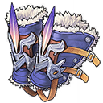
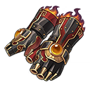
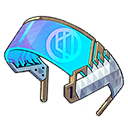

추천 광추
바람에 흩날리는 거짓말
속도 +18% · 공격 시 방깎
효과 자세히
망연 방어력 −16% · 전투 속도 170에서 도난 −8% 추가. 기본 확률 120%, 2턴. 상태별 최근 부여 효과 적용.
땀방울처럼 빛나는 결심
공격 시 함락 · 방어력 −16%
효과 자세히
함락 없는 적에게 기본 확률 100%, 1턴.
초보자 임무 시작 전
효과 명중 +40% · 에너지 회복
효과 자세히
방어력 감소 상태인 적 공격 → 에너지 +8pt.
계속 내리는 비
효과 명중 +24% · 취약 +12%
효과 자세히
공격 후 기본 확률 100%로 임의 피격 적 1기에 에테르 코드 1턴. 디버프 3종 적 공격 시 치확 +12%.
휴일의 목욕탕 대모험
본인 피해 +32% · 적 받는 피해 +16%
효과 자세히
공격 후 기본 확률 100%로 취약 2턴. 같은 유형은 중복 적용되지 않음.
추천 유물
밤낮의 경계를 나는 매 4 · 바다에 잠긴 루샤카 2
- 머리
 주옵션HP부옵션속도 · 효과 명중 · 효과 저항 · HP% · 방어력%
주옵션HP부옵션속도 · 효과 명중 · 효과 저항 · HP% · 방어력% - 손
 주옵션공격력부옵션속도 · 효과 명중 · 효과 저항 · HP% · 방어력%
주옵션공격력부옵션속도 · 효과 명중 · 효과 저항 · HP% · 방어력% - 몸통
 주옵션효과 명중부옵션속도 · 효과 저항 · HP% · 방어력%
주옵션효과 명중부옵션속도 · 효과 저항 · HP% · 방어력% - 다리

주옵션속도부옵션효과 명중 · 효과 저항 · HP% · 방어력% - 구체
 주옵션HP% / 방어력%부옵션속도 · 효과 명중 · 효과 저항 · HP% (주옵션 제외) · 방어력% (주옵션 제외)
주옵션HP% / 방어력%부옵션속도 · 효과 명중 · 효과 저항 · HP% (주옵션 제외) · 방어력% (주옵션 제외) - 매듭
 주옵션에너지 회복효율부옵션속도 · 효과 명중 · 효과 저항 · HP% · 방어력%
주옵션에너지 회복효율부옵션속도 · 효과 명중 · 효과 저항 · HP% · 방어력%
이 조합을 추천하는 이유
매 필살기 후 행동 게이지 +25%. 루샤카 회복효율 +5% · 1번 공격력 +12%.
신공을 탐구하는 명장 4 · 바다에 잠긴 루샤카 2
- 머리
 주옵션HP부옵션속도 · 효과 명중 · 효과 저항 · HP% · 방어력%
주옵션HP부옵션속도 · 효과 명중 · 효과 저항 · HP% · 방어력% - 손

주옵션공격력부옵션속도 · 효과 명중 · 효과 저항 · HP% · 방어력% - 몸통
 주옵션효과 명중부옵션속도 · 효과 저항 · HP% · 방어력%
주옵션효과 명중부옵션속도 · 효과 저항 · HP% · 방어력% - 다리
 주옵션속도부옵션효과 명중 · 효과 저항 · HP% · 방어력%
주옵션속도부옵션효과 명중 · 효과 저항 · HP% · 방어력% - 구체
주옵션HP% / 방어력%부옵션속도 · 효과 명중 · 효과 저항 · HP% (주옵션 제외) · 방어력% (주옵션 제외)
- 매듭
주옵션에너지 회복효율부옵션속도 · 효과 명중 · 효과 저항 · HP% · 방어력%
이 조합을 추천하는 이유
명장은 방어력 감소 부여 시 파티 피해를 높이며 동일 효과가 중첩되지 않습니다.
별처럼 빛나는 천재 4 · 꿈의 땅 페나코니 2
- 머리

주옵션HP부옵션효과 명중 · 치명타 확률 · 치명타 피해 · 속도 · 공격력% - 손
 주옵션공격력부옵션효과 명중 · 치명타 확률 · 치명타 피해 · 속도 · 공격력%
주옵션공격력부옵션효과 명중 · 치명타 확률 · 치명타 피해 · 속도 · 공격력% - 몸통
 주옵션치명타 확률 / 치명타 피해 / 효과 명중부옵션효과 명중 (주옵션 제외) · 치명타 확률 (주옵션 제외) · 치명타 피해 (주옵션 제외) · 속도 · 공격력%
주옵션치명타 확률 / 치명타 피해 / 효과 명중부옵션효과 명중 (주옵션 제외) · 치명타 확률 (주옵션 제외) · 치명타 피해 (주옵션 제외) · 속도 · 공격력% - 다리
 주옵션속도부옵션효과 명중 · 치명타 확률 · 치명타 피해 · 공격력%
주옵션속도부옵션효과 명중 · 치명타 확률 · 치명타 피해 · 공격력% - 구체
 주옵션양자 속성 피해부옵션효과 명중 · 치명타 확률 · 치명타 피해 · 속도 · 공격력%
주옵션양자 속성 피해부옵션효과 명중 · 치명타 확률 · 치명타 피해 · 속도 · 공격력% - 매듭
 주옵션에너지 회복효율부옵션효과 명중 · 치명타 확률 · 치명타 피해 · 속도 · 공격력%
주옵션에너지 회복효율부옵션효과 명중 · 치명타 확률 · 치명타 피해 · 속도 · 공격력%
이 조합을 추천하는 이유
천재 방어력 무시 10% · 양자 약점 대상 추가 10%. 페나코니 같은 양자 동료 피해 +10%.
이 정도면 잘 키웠다
선택한 세팅 기준 · —는 확인된 수치 없음
- 정련된 새 빛
필살기를 자주 써 광역 방어력 감소를 공급합니다.
| 스탯 | 추천 스탯 | 준종결 | 종결 |
|---|---|---|---|
| 속도 | 166.7+ | — | — |
| 효과 명중 | 67% | — | — |
| 에너지 회복효율 | 124.44%+[1]기본 100%에 5성 +15 매듭의 에너지 회복효율 19.44%p와 「바다에 잠긴 루샤카」 2세트의 5%p를 더한 총량입니다. | — | — |
세팅 기준·출처
정련된 새 빛과 매 4세트 디버퍼 기준입니다. 공개 가이드에서 이 세팅의 준종결 또는 종결 수치를 확인하지 못했습니다.
스탯 조건과 각주
- 에너지 회복효율 · 추천 스탯 기본 100%에 5성 +15 매듭의 에너지 회복효율 19.44%p와 「바다에 잠긴 루샤카」 2세트의 5%p를 더한 총량입니다. ↑
은랑이 방어력 감소를 부여해 명장의 파티 피해 증가를 발동합니다.
| 스탯 | 추천 스탯 | 준종결 | 종결 |
|---|---|---|---|
| 속도 | 최대한 | — | — |
| 효과 명중 | 67% | — | — |
| 에너지 회복효율 | 124.44%+[1]기본 100%에 5성 +15 매듭의 에너지 회복효율 19.44%p와 「바다에 잠긴 루샤카」 2세트의 5%p를 더한 총량입니다. | — | — |
세팅 기준·출처
공개 가이드에서 이 세팅의 준종결 또는 종결 수치를 확인하지 못했습니다.
스탯 조건과 각주
- 에너지 회복효율 · 추천 스탯 기본 100%에 5성 +15 매듭의 에너지 회복효율 19.44%p와 「바다에 잠긴 루샤카」 2세트의 5%p를 더한 총량입니다. ↑
효과 명중 외에 양자 피해와 치명타에 투자합니다.
| 스탯 | 추천 스탯 | 준종결 | 종결 |
|---|---|---|---|
| 공격력 | 2000~2500+ | — | — |
| 속도 | 160+ | — | — |
| 효과 명중 | 50~67% | — | — |
| 치명타 확률 | 50%+ | — | — |
| 치명타 피해 | 100%+ | — | — |
세팅 기준·출처
Prydwen의 선택적 피해 스탯 기준입니다. 디버프 안정성이 필요하면 효과 명중을 우선합니다. 공개 가이드에서 이 세팅의 준종결 또는 종결 수치를 확인하지 못했습니다.
성혼과 추천 돌파
1돌 필살기 에너지 회복 · 2돌 적 받는 피해 증가와 아군 공격으로 결함 이식.
1필살기 공격 후 디버프당 에너지 +7pt추천
공격당 최대 5회, 최대 35pt.
2적 진입 → 받는 피해 +20%추천
아군이 적 공격 → 기본 확률 100%로 무작위 결함 1개 이식.
3전투 스킬·특성 +2
스킬·특성 레벨 상한 각각 15.
4필살기 디버프당 공격력 20% 추가 피해
적마다 최대 5개까지 양자 추가 피해 계산.
5필살기 +2 · 일반 공격 +1
필살기·일반 공격 레벨 상한 각각 15·10.
6디버프당 본인 피해 +20%
최대 +100%.
추천 파티


기본 운영과 행적
편성 첫 자리에서 약점 지정
딜러를 파티 1번 → 전투 스킬 약점 이식 시 해당 속성 우선 → 필살기 적 방어력 −45%.
- 약점이 이식된 적 처치 → 아직 이식되지 않은 다른 적에게 이전. 정예부터 우선.
행적 육성 순서
필살기 → 전투 스킬 → 특성 → 일반 공격
아하 속도 계산기 →기준과 출처 · 2026-11-27
4.7 데이터 · 3.4 정련된 새 빛 강화 · Prydwen 장비 참고